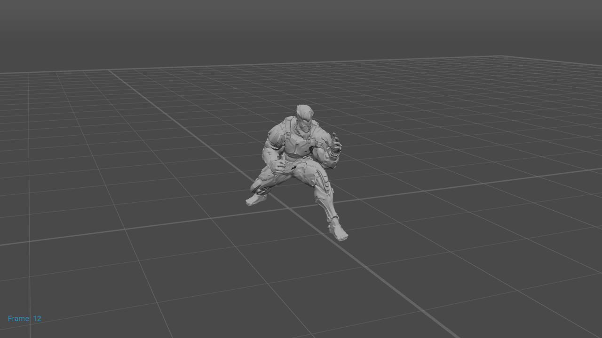
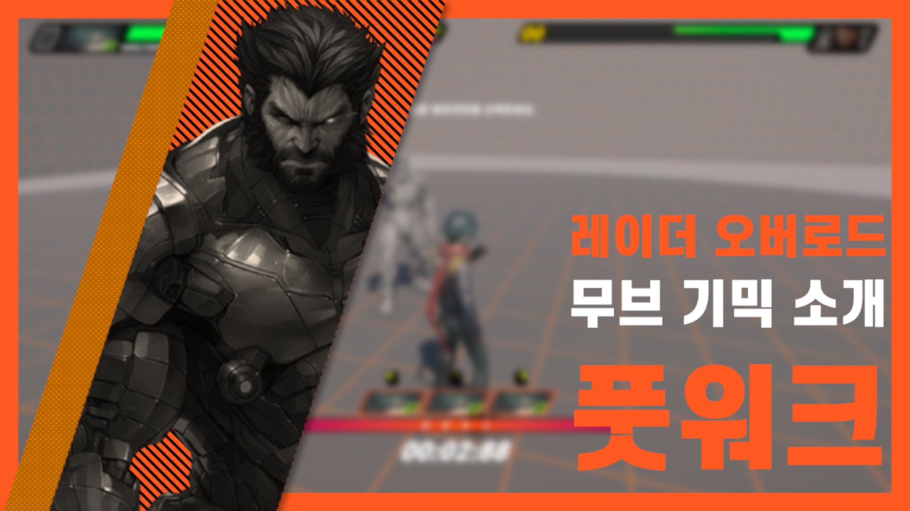
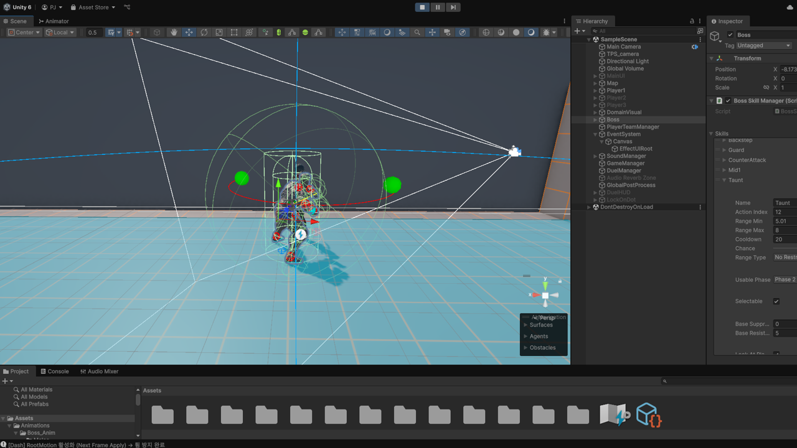

플레이어에게 주고 싶은 경험을 계속해서 되새기고, 실제로 그러한 플레이가 펼쳐질 수 있도록 다방면에서 개선을 반복하는 것이 저만의 기획 프로세스입니다.
기획 문서를 작성하는 데에 그치지 않고, 게임 엔진, 그래픽 툴 등 다양한 도구를 활용하여 아이디어를 실제 플레이 가능한 형태로 프로토타이핑하는것이 특기로, 전투 체험의 쾌적도를 위해 판정 범위, 스킬 애니메이션의 선딜레이를 반복 테스트하며 그 수지를 직접 조정하거나, 몬스터 콘셉트와 위험도에 부합하는 AI를 위해 BT의 세부 노드를 개선하고 전용 로직을 제작하는 등 실전 위주의 검증 절차를 통해 그 완성도를 상승시키고 있습니다.
플레이어가 직면할 실제 전투 환경을 염두하며 작은 디테일을 놓치지 않는 작업 스타일은 비단 전투 기획 뿐 아니라 게임 기획 업무 전반에 좋은 재료가 되리라 확신합니다.
기획 문서를 작성하는 데에 그치지 않고, 게임 엔진, 그래픽 툴 등 다양한 도구를 활용하여 아이디어를 실제 플레이 가능한 형태로 프로토타이핑하는것이 특기로, 전투 체험의 쾌적도를 위해 판정 범위, 스킬 애니메이션의 선딜레이를 반복 테스트하며 그 수지를 직접 조정하거나, 몬스터 콘셉트와 위험도에 부합하는 AI를 위해 BT의 세부 노드를 개선하고 전용 로직을 제작하는 등 실전 위주의 검증 절차를 통해 그 완성도를 상승시키고 있습니다.
플레이어가 직면할 실제 전투 환경을 염두하며 작은 디테일을 놓치지 않는 작업 스타일은 비단 전투 기획 뿐 아니라 게임 기획 업무 전반에 좋은 재료가 되리라 확신합니다.



예시
보스 몬스터「레이더 오버로드」를 기획하며 이러한 기획 프로세스가 더욱 확고해졌습니다. 해당 몬스터는 빠른 격투술로 지속적인 압박을 가하는 기교형 적으로 설계했으나, 대상과의 거리에 기반해 스킬을 사용하는 전투 로직 특성상 플레이어가 의도적으로 공격 거리를 허용한 뒤 곧바로 거리를 벌리면 스킬 사용이 결정된 그 자리에서 스킬을 실행하였기에, 상대하는 플레이어에게는 ‘날렵한 압박자’가 아닌 ‘헛손질하는 허술한 적’ 정도의 인식밖에 줄 수 없었습니다.
빠른 전투 템포를 가진 「젠레스 존 제로」의 전투 특성상 보스 적으로부터 도망치는 플레이는 매우 드물지만, 플레이어의 특정 행동을 기대하고 거기에 의존한 AI를 구성해서는 안 된다는 생각이 있었기에「레이더 오버로드」의 근접 공격 시퀀스를 더욱 치밀하게 보강해야겠다는 필요성을 느꼈습니다.
해결
처음엔 단순히 근접 공격 스킬들의 애니메이션들에 전진성을 추가하는 방안을 생각했으나, 정권 지르기처럼 전진성이 없는 동작까지도 미끄러지듯 밀고 들어오는 움직임을 보인다면 모션에서 기대되는 움직임과 실제 움직임 간의 부조화로 전투의 몰입감이 저해될 것으로 예상되어 해당 방안은 폐기했습니다.
그렇게 다방면으로 고민하던 도중 격투 장르 게임들의 스탭 동작과 복싱 선수들의 움직임을 떠올렸고, 거기에 착안하여 접근, 선회, 후퇴 등의 동작을 가능하게 할 ‘풋워크 로직’을 추가하였습니다.
풋워크 로직은 목표 대상과의 거리를 참조해 다각도의 리포지셔닝을 수행하는 로직으로, 백스탭·피벗 스탭·프레싱 등의 동작으로 구성되어 있습니다.
그중 프레싱 동작을 일부 근접 스킬의 발동 시퀀스 앞에 배치하여 스킬 확정 시점에 거리 체크를 재실행하고, 거리에 따라 해당 동작을 선행하도록 구성했습니다.
‘접근하며 시전’이 아닌, 접근 후 시전이라는 시퀀스로 전진성 없는 스킬도 실행에 앞서 자연스럽게 대상과의 거리를 좁힐 수 있게 되었으며,
그 결과 플레이어는 몬스터가 전투 중 여러 조건에 반응하여 유동적으로 다음 행동을 결정한다는 인상을 받게 되었고, 근접 스킬들의 유도력 또한 전반적으로 향상되어 레이더 오버로드는 더 이상 헛손질하지 않고 지속적인 압박을 가하는 강적으로 완성될 수 있었습니다.